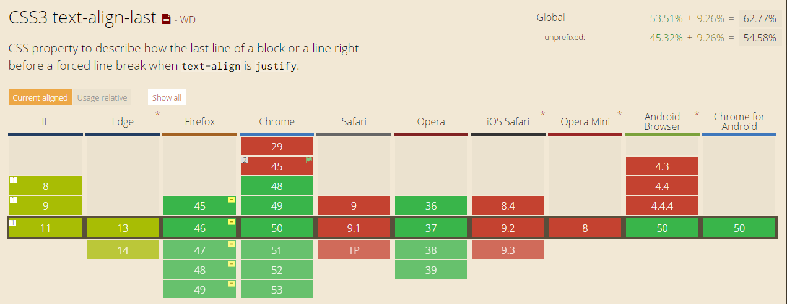

text-algin:justify实现文本两端对齐
Contents
最近在写页面的时候遇到了一个问题—当行文本双端对齐，大家都知道CSS属性中有一个“text-align:justify”，但是这个属性使用的时候，要求还是挺多的，尤其是要实现单行文本双端对齐。关于两端对齐，大漠和张鑫旭的博客中都有文章讲，非常不错，推荐给大家：
text-align:justify与text-align-last:justify
1.text-align
MDN中这样介绍到：“text-align CSS属性定义行内内容（例如文字）如何相对它的块父元素对齐。text-align并不控制块元素自己的对齐，只控制它的行内内容的对齐。”从这里可以看出，控制文本居中对齐直接写text-align:justify就可以。但是这对于多行文本（即有文本换行）除了最后一行都可以实现两端对齐，最后一行依旧左对齐。所以就需要控制最后一行文本对齐方式的CSS属性：text-align-last。
2.text-align-last
text-align-last 属性规定如何对齐文本的最后一行。但是这里注意一点text-align-last 属性只有在 text-align 属性设置为 “justify” 时才起作用。所以，利用这个属性就可以控制最后一行文本的对齐方式。我们可以想象，如果是单行文本，就可以当作最后一行文本处理，直接设置text-align-last:justify来实现当行文本两端对齐，可惜的是，这样的方法兼容性并不好。 
利用CSS实现兼容性较好的两端对齐
从上面的分析可以知道，如果文本出现换行，则除最后一行的所有文本都会实现两端对齐。这时我们想到利用::after伪类，给元素最后设置一个看不见的内联元素，并设置宽度为100%，就可以让我们可以看到的单行文本让浏览器认为是多行文本，从而实现单行文本的两端对齐。具体实现代码如下：
|
|
|
|
运行结果：

2018/5/11更新
这里需要注意一个问题⚠️
如果将html进行压缩（例如使用webpack把html进行压缩），将元素之间的空白节点去掉（这行），则以上两端对齐效果会消失，因为**inline-block本身的外在表现是行框，如果没有空白节点，多个inline-block紧紧挨在一起，表现可以理解为一个letter，letter是不受text-align影响的，text-align针对的是 word!**